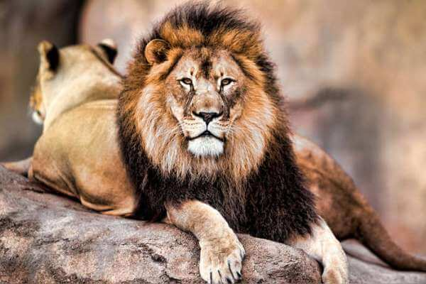
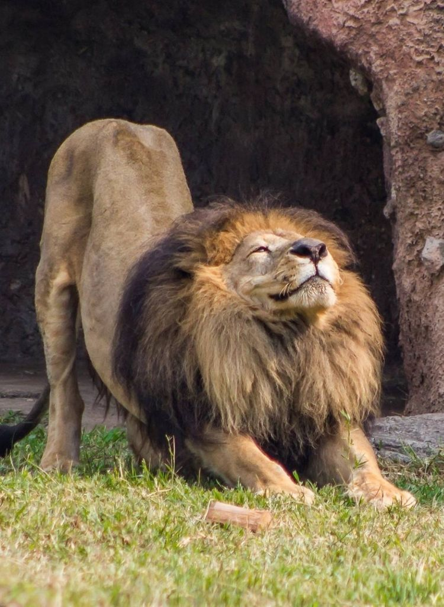

El león (Panthera leo) es un mamífero carnívoro de la familia de los félidos y una de las cinco especies del género Panthera. Los leones salvajes viven en poblaciones cada vez más dispersas y fragmentadas del África subsahariana (a excepción de las regiones selváticas de la costa del Atlántico y la cuenca del Congo) y una pequeña zona del noroeste de India (una población en peligro crítico en el parque nacional del Bosque de Gir y alrededores), habiendo desaparecido del resto de Asia del Sur, Asia Occidental, África del Norte y la península balcánica en tiempos históricos. Hasta finales del Pleistoceno, hace aproximadamente 10 000 años, de los grandes mamíferos terrestres, el león era el más extendido tras los humanos. Su distribución cubría la mayor parte de África, gran parte de Eurasia, desde el oeste de Europa hasta la India, y en América, desde el río Yukón hasta el sur de México.345 Si sobreviven a las dificultades de la infancia, las leonas que viven en un hábitat seguro, como por ejemplo el parque nacional Kruger, a menudo pueden llegar a la edad de 12-14 años, mientras que los leones raramente viven más de ocho años. Sin embargo, se conocen casos de leonas que han vivido hasta veinte años en estado salvaje. En cautiverio, tanto los machos como las hembras pueden vivir más de veinte años. Suelen vivir en sabanas y herbazales, aun cuando pueden entrar en zonas arbustivas y boscosas. Los leones son animales especialmente sociales en comparación con otros félidos. Una manada de leones se compone de hembras que tienen una relación familiar, sus crías y un número reducido de machos adultos. Las leonas suelen cazar juntas, en grupo, atacando principalmente a grandes ungulados. El león es un superpredador y clave, pese a que puede tener un comportamiento carroñero si tiene la oportunidad. Aun cuando los leones, normalmente, no cazan humanos de manera selectiva, algunos de ellos pueden convertirse en antropófagos y buscar presas humanas. El león es una especie vulnerable y, en su ámbito de distribución africano, a lo largo de las dos últimas décadas ha sufrido un declive de las poblaciones, posiblemente irreversible, de entre un 30 % y un 50 %; las poblaciones no son viables fuera de las reservas delimitadas y los parques nacionales. Aunque la causa de este declive no es del todo comprendida, la pérdida del hábitat y los conflictos con humanos son actualmente los motivos de preocupación más importantes. Se han tenido leones en cautividad desde los tiempos de la Antigua Roma, y desde finales del siglo XVIII han sido una especie muy buscada y exhibida en zoológicos por todo el mundo. Los propios zoológicos están colaborando en programas de reproducción para proteger la amenazada subespecie asiática. Los machos son muy fáciles de distinguir gracias a su melena, que hace de su cabeza uno de los símbolos animales más ampliamente conocidos de la cultura humana. Aparece muy a menudo en la literatura, la escultura, la pintura, en banderas nacionales, y en películas y literatura contemporáneas.
El león es el segundo félido viviente más grande después del tigre. Con unas extremidades potentes, una fuerte mandíbula y unos dientes caninos de ocho centímetros, el león puede matar grandes presas. Los leones poseen el mayor porcentaje de músculo esquelético (estriado) entre todos los mamíferos, con casi un 59 %, lo cual es 1,31 veces más que el promedio para otras especies de mamíferos. La coloración de los leones va desde un color beige claro hasta un marrón amarillento, rojizo u ocre oscuro. Las partes inferiores suelen ser más claras y el pelo del extremo final de la cola es negro. Las crías de león poseen un dibujo manchado que se va perdiendo con la edad, aunque a veces puede apreciarse en las patas y el vientre, sobre todo de las leonas. Los leones son los únicos félidos que presentan un dimorfismo sexual en la etapa adulta. Los machos poseen una densa melena, también denominada guedeja o vedeja,1516 de la que las hembras carecen. El color de la melena va del rubio al negro y suele oscurecerse a medida que el león envejece. Dos leonas en Masái Mara (Kenia). El peso natural de los leones adultos varía generalmente entre 180-190 kg12 en los machos y 120-182 kg en las hembras;1718 los leones tienden a tener un tamaño diferente según el medio ambiente y la zona que habitan, algo que resulta en una gran variedad de pesos registrados. Por ejemplo, los leones del África austral tienden a pesar un 5 % más que los del África oriental en general. La longitud de la cabeza y el cuerpo es de 205 a 334 cm en los machos y 180 a 270 cm en las hembras; la altura al hombro alcanza los 125 cm en los machos y las hembras alcanzan 107 cm. La cola mide de 90 a 105 cm en los machos y 70 a 100 cm en las hembras.18 El león más largo conocido fue un macho de 3,847 metros (12 pies con 7,5 pulgadas).20 Otro macho de melena negra capturado por G. Gladney cerca de Mucsso (en el sur de Angola) en octubre de 1973 midió 3,6 metros de largo. Se han reportado leones excesivamente pesados, como uno cazado por Daniel Boone de 411 kg;21 dos leones muertos en la laguna de Tanganyika que estuvieron matando animales de granja se pesaron en 313 y 363 kg.22 Un león que fue capturado en el medio salvaje y criado en cautividad se pesó en 395 kg;23 también hubo un caso en el que un león fue abatido y documentado en 340 kg por Charles Pitman en su libro llamado The African Game wardens.24 Aunque el león más grande documentado y aceptado por la ciencia fue un macho de 313 kg, muerto por Lennox Anderson en 1936 en Hectorspruit al este de Transvaal, otros leones en esta misma área (este de Transvaal) han alcanzado grandes pesos cercanos a los 250 kg sin contenido estomacal (que puede representar el 20 % del peso del animal).25 También en esta área se encontró el cráneo más grande registrado para cualquier león o félido moderno en el mundo, con 46.68 cm de largo.2627 Sin embargo, el peso promedio de los leones que habitan en el sur de África, en lugares como el parque nacional Kruger, Zimbabue o el Kalahari, se ubica en unos 187,5 a 193,3 kg para los machos y unos 124,2 a 139,8 kg para las hembras.28 En África oriental el peso promedio de los leones macho que habitan en el Serengueti es de 182 kg y aquellos del área de conservación del Ngorongoro es de 212 kg.29 Los leones en cautividad suelen ser mayores que los salvajes —el mayor león jamás documentado es un macho en un zoológico que pesó 454 kg—. Tanto en los machos como en las hembras, el final de la cola tiene una mata de pelos a modo de brocha. En algunos leones, la mata oculta una «espina» o «espuela» de unos 5 mm de largo, formada por la fusión de las secciones finales del hueso de la cola. El león es el único félido que tiene una cola con una mata de pelos —se desconoce la función de la mata y la espuela—. La mata está ausente en el momento del nacimiento, pero se desarrolla a partir de los 165 días de vida y ya es fácilmente observable a los 7 meses.
La melena del león macho, única entre los félidos, es uno de los rasgos más característicos de la especie. Hace que el león parezca más grande, causando una excelente intimidación, lo que ayuda al león en los combates contra otros leones y contra la principal especie competidora de los leones en África, la hiena manchada. La presencia, ausencia, color y tamaño de la melena están asociadas con las condiciones genéticas, la madurez sexual, el clima y la producción de testosterona; como regla general, cuanto más oscura y densa sea la melena, más sano es el león. Investigaciones en Tanzania también sugieren que la longitud de la melena indica éxito en los combates entre machos emparentados. Los ejemplares con una melena más oscura pueden tener una vida reproductiva más larga y una mayor proporción de supervivencia de las crías, aunque sufren en los meses más calurosos del año. En los grupos dominados por una coalición de dos o tres machos, es posible que las leonas tiendan a querer aparearse más con los leones que tienen una melena más densa. Un león macho sin melena y con poco pelo corporal en el parque nacional de Tsavo East, Kenia. Antiguamente, los científicos creían que el estatus distinto de algunas subespecies se podía justificar por la morfología, incluyendo el tamaño de la melena, por ejemplo para identificar subespecies como el león del Atlas o el león del Cabo. No obstante, las investigaciones han demostrado que los factores ambientales influyen en el color y el tamaño de la melena del león, como actualmente sucede con la temperatura ambiental. La temperatura ambiental más fresca de los zoos europeos y norteamericanos, por ejemplo, puede dar lugar a una melena más densa. Así pues, la melena no es un marcador adecuado para identificar subespecies.3536 No obstante, los machos de la subespecie asiática se caracterizan por tener melenas menos densas que el promedio de las de los leones africanos. Se han observado leones macho sin melena en Senegal y en el parque nacional de Tsavo East de Kenia, así como el león macho blanco, originario de Timbavati, que también carecía de melena. Los leones castrados tienen melenas mínimas. En ocasiones se ha observado la falta de melena en poblaciones consanguíneas de leones, algo que también causa una pobre fertilidad. Leona con la especie de collar que a veces hace que se las identifique como machos. Muchas leonas tienen una especie de collar que puede ser aparente en ciertas posturas, lo cual ha llevado a que algunas veces, en esculturas y dibujos, especialmente en el arte antiguo, el collar de las leonas sea malinterpretado como la melena del macho. Sin embargo, se diferencia de la melena en que se encuentra a la altura de la mandíbula (bajo las orejas), en que los pelos son mucho más cortos, y a menudo no es perceptible, mientras que la melena se extiende por encima de las orejas, a menudo cubriéndolas completamente. Se han observado hembras que poseen melena muy parecida a la de los machos e incluso hembras intentando copular con otras hembras. Este fenómeno parece deberse a altos contenidos de testosterona en estos animales. Las pinturas rupestres de los extinguidos leones de las cavernas de Europa muestran únicamente leones sin melena, o con una simple traza, algo que sugiere que carecían de melena. Quizás, los protagonistas de las pinturas son probablemente hembras que cazan (ya que son representadas en escenas de caza), de manera que estas imágenes no permiten llegar a una conclusión fiable sobre si los machos tenían melena. Las ilustraciones sugieren que este león utilizaba la misma organización social y estrategias de caza que los leones actuales.